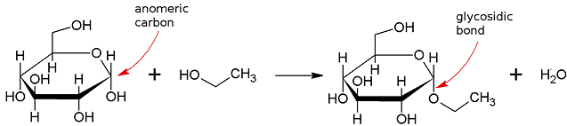
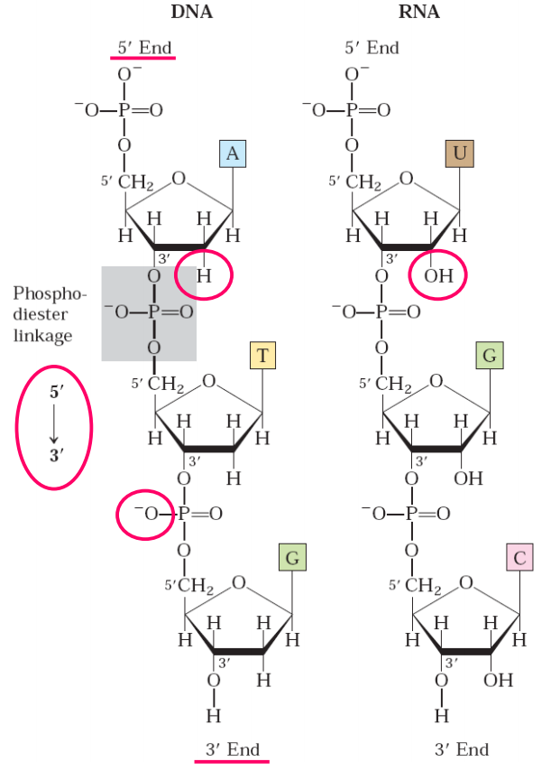
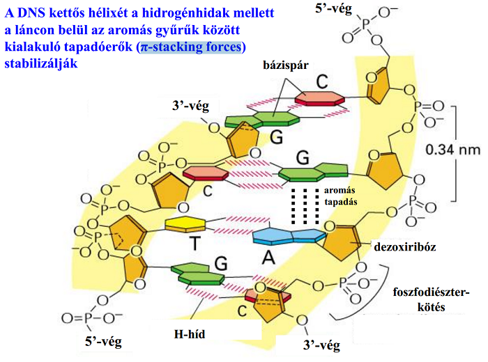
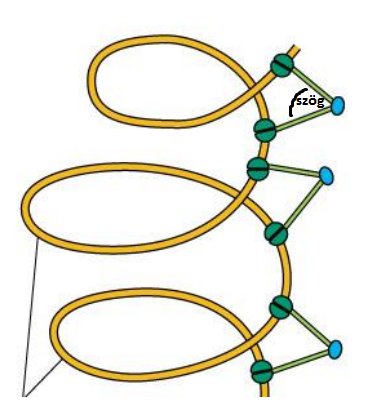
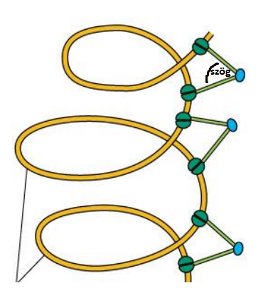
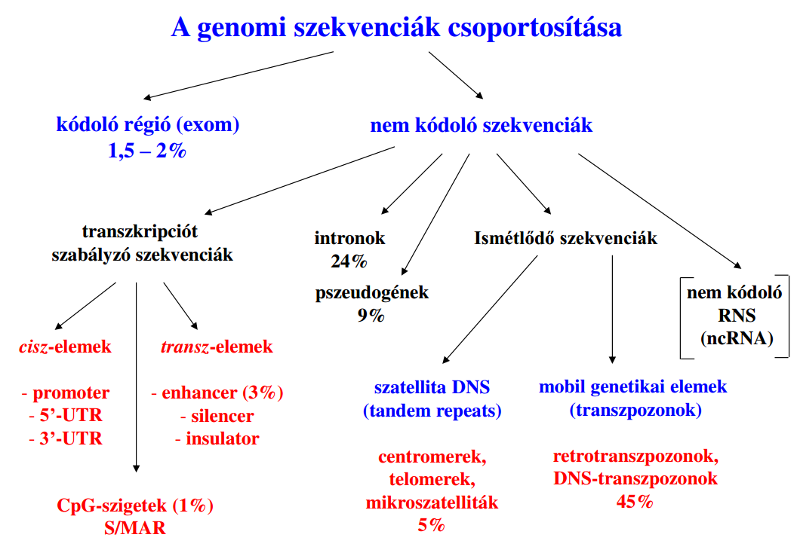
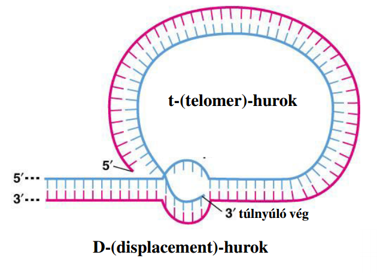
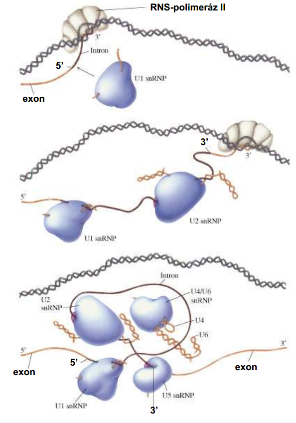
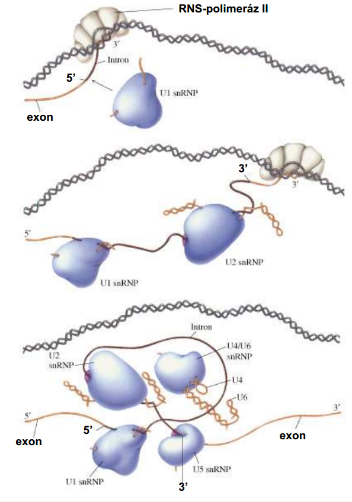

I. A genetikai információ tárolása és örökítése
#1 A pro- és eukarióta sejtek összehasonlítása: a kompartmentáció jelentősége és a legfontosabb sejtorganellumok szerepe.
A pro- és eukarióta sejtek összehasonlítása: a kompartmentáció jelentősége és a legfontosabb sejtorganellumok szerepe
-
szerveződési szint
- prokariótákból evolúció során úgy lett eukarióta, hogy membránnal körülhatárolt kompartimentumok jöttek bennük létre
- ezért az eukarióta eggyel magasabb szerveződési szintű
- ugyanis a membránok biztosítanak térben és időben differenciált működést kompartimentáció "funkcionális" szemléltetése
- céhek esetében egy ember() végezte az egész feladatot (kivágja a fát, kifaragja, lefesti és árusítja a széket)
- manufaktúra esetében csak egy szakaszát végzi egy ember(organellum) (van aki csak a fát vágja ki, van aki csak kifaragja stb.) kompartimentáció előnyei
- a többi organellumra veszélyes anyagok,reakciók elkülönítése ➜ pl. peroxiszóma: H2O2-termelés és –lebontás
- magas lokális szubsztrátkoncentrációk, hatékony enzimreakciók (sorozatreakciók: pl. mitokondriális légzési lánc) membránok
- plazmamembrán
- intracelluláris membránok
- mitokondrium
- endomembránrendszer
- magmembrán és ER egymás folytatása
- vezikuláris transzport ER és Golgi között
- anterográd(ER➜G)
- retrográd(G➜ER)
- peroxiszóma és lizoszóma membránja az ER-ből származik !!
"céhek(prokarióta) vs. manufaktúra(eukarióta)" példáján jól bemutatható
A pro- és eukarióta sejtek összehasonlítása: a kompartmentáció jelentősége és a legfontosabb sejtorganellumok szerepe
- sejtmag
- mitokondrium
- ER
- Golgi
- lizoszóma
- peroxiszóma
- replikáció ➜ DNS megkettőzés
- transzkripció ➜ RNS-szintézis
- mitokondriális DNS/RNS/fehérje-szintézis
- ATP-termelés
- ER-ből érkező fehérjéket és lipideket átalakítja és válogatja ➜ továbbküldi (ER/plazmamembrán/késői_endoszóma)
- átalakítás során szénhidrátot adhat az anyaghoz ➜ pl. glikolipidet készít lipidből, glikoproteint fehérjéből
- savi hidrolázok, endogén és exogén anyagok lebontása ✽
- oxidációval lebontása az alábbiaknak ➜ zsírsavak, purin bázisok, aminosavak
- egyes toxikus anyagokat pl. etanolt,formaldehidet eloxidálva eliminálja
- alábbiak szintézise
- koleszterinéhez hozzájárul
- epesavakéhoz hozzájárul
- éter-lipidek szintézise csak itt van
- plazmalogén-szintézis első lépése
- transzláció
sejtorganellumok felsorolása?(6)
sejtmag fő funkciói?(2)
mitokondrium fő funkciói?(2)
Golgi fő funkciója?
lizoszóma fő funkciója?
peroxiszóma fő funkciói?(1+2)
sER funkciói?(6)
| általános | speciális |
|---|---|
|
# foszfolipid-szintézis
# lipid-szintézis ➜ pl. koleszterin (májban különösen intenzív)
# Ca2+ tárolás ➜ harántcsíkolt izomban különösen intenzív!!!!
|
# szteroid-szintézis (mellékvesében,herékben,petefészekben)
# "méregtelenítés" (májban)
# glükóz-6-foszfát "lebontása" glükózzá + foszfátionná (májban)
|
rER funkciója?
#2 A nukleotidok felépítése. A nukleinsavak primer és szekunder szerkezete (DNS, különböző RNS-ek).
A nukleotidok felépítése. A nukleinsavak primer és szekunder szerkezete (DNS, különböző RNS-ek)
- bázis ➜ purin / pirimidin
- szénhidrát ➜ ribóz / dezoxiribóz
- legalább 1 foszfát ➜ HPO4- / H2PO4- (hisz pH!)
- nukleozid ➜ nukleobázis + pentóz
- nukleotid ➜ nukleozid + foszfát
- -ozin vs -idin ///// -ilát vs -idilát
- (AMP-t enzimek nevében adenilsavként nevezik, és így tovább)
- β-N-glikozidos kötés ➜ pentóz és nukleobázis között
- foszforsavészter-kötés ➜ pentóz és foszfát között
- foszfodiészter-kötés ➜ nukleotidokat kapcsolja össze
- foszforsav-anhidrid kötés ➜ foszfátok között, makroerg!!
- félacetál/félketál + alkohol/szerves amino származék ➜ acetál/ketál + H2O
- jelen esetben tehát ami létrejön az acetál, ezenkívül glikozid is, és nukleozid is
- purinnál 9 és 1' között van a β-N-glikozidos kötés!!!
- pirimidinnél 1 és 1' között van a β-N-glikozidos kötés!!!
- mivel csak 1 sigma-kötés a β-N-glikozidos kötés, ezért szabad rotáció van körülötte
- purinnál így sokkal gyakoribb az anti KONFORMÁCIÓ (pirimidinnél nincs lényeges különbség a kettő között)
- glikozid ➜ szénhidrát mely valamilyen másik molekulához kapcsolódik (lehet szénhidrát, de lehet más is)
- kovalens kötés, mellyel a szénhidrát valamilyen másik molekulához kapcsolódik (lehet szénhidrát, de lehet más is)
- mert a ribóz β-anomer (lásd 134-es kérdésnél kifejtve)
- a kötés lehet C,S,O,N (t nincs :))
- O esetében ez lenne 
- itt azonban O helyén N van
- két kötés van
- foszforsavészter-kötés ➜ pentóz és foszfát között
- foszforsav-anhidrid kötés ➜ foszfátok között
- foszforsav-anhidrid kötés makroerg!!! ➜ ugyanis nem képes delokalizációra, így instabil ➜ hidrolízissel így felszakad a kötés és nagy energia szabadul fel (30kJ/mol)
- 1db ATP így kb 60kJ/mol energiát tárol (tehát ha az Adenozin-TriPhosphat ha Adenozin-MonoPhosphattá alakul, akkor ennyi energia szabadul fel!!!)
nukleotidot felépítő molekulák?
TAB elnevezésük (nukleobázis,nukleozid,nukleotid)?

kötések ➜ felsorolás előfordulással?
R ribonukleozid szerkezete az adenozin és uridin példáján?
reakció felírása? milyen molekulát kapunk
kötés neve? hányas számú atomok között van?
kötés jellemzője és következménye?
glikozid és glikozidos kötés mi?
miért β a kötés?
miért N a kötés?


nukleotid "energiatárolásának" lényege?
A nukleotidok felépítése. A nukleinsavak primer és szekunder szerkezete (DNS, különböző RNS-ek)
- nukleinsavak polimerek (fehérjék is) ➜ monomerjei a nukleotidok
- 3' vég ➜ 3' C atomon szabad -OH csoport van, mert már nem kötődik hozzá foszfát
- 5' végnél ugyanez, bár az gyakran foszforilált marad
- töltése negatív, lásd foszfátion bekarikázva a képen!!! 
- bázispárok merőlegesek a cukor-foszfát-gerincre
- átmérője 2nm
- bázispárok síkjába képzeljem el!! (képen direkt van torzítva, hisz az merőleges a monitor síkjára)
- átmérője állandó, mert komplementer
- tulajdonságai
- komplementer ➜ purinhez mindig pirimidin kapcsolódik
- antiparallel, mert a két szál lefutása ellentétes ➜ fenntről-lefele a bal oldali 5'-3' míg a jobb oldali 3'-5'
- 5' bal felső & jobb alsó
- jobbmenetes kettős hélix
- a szomszédos bázispárok egymáshoz képest 36°-os szögben fordulnak el (10db képez egy fordulatot)
- jobbmenetes? ► felülről(vagy alulról) nézve az óramutató járásával egyező irányba forogva távolodik
- menetmagasság? ► 3,4nm (tehát 10bázispár = 1fordulat hossza ennyi)
- (menetmagasságból mi következik?) ► 0,34nm van két szomszédos bázispár között, ami igen kicsi távolság (pl. C-C kovalens kötésnél a távolság ~0,15nm)
- A & B jobbmenetes
- Z balmenetes
- egyedül Z eseténél van szin, mégpedig a purinbázisok minden más anti
- BAZ irányban növekszik a bp/fordulat || átmérő pedig logikus
- fenolok között kialakuló kölcsönhatás ("aromás tapadás")
- akkor a legerősebb, ha 36° szögben fordul el a két szomszédos bp
- !génekben! az arányuk 1:1
- amely szakasz G≡C-ben gazdag, az kisebb valószínűséggel fog transzkripcióra kerülni ➜ugyanis 1,5x erősebb a kölcsönhatás G≡C között, mint A=T között (hisz 3kötés van köztük, nemcsak 2)
- nagy barázda mentén történik a transzkripció
R primer szerkezetük
§ így poláros olyan értelemben, hogy a két végük megkülönböztethető (3' vs 5')
DNS primer szerkezet ➜ síkok & átmérő? tulajdonságai?

képen melyik vég 5' és melyik 3'?

DNS szekunder szerkezete?

DNS konformációi?
felsorolásuk & menet?

nukleozid konformációk?
előfordulásuk?
B leggyakoribb
A dehidratáció esetében (vízelvonás / só hozzáadás) ➜ kondenzált forma, így nem lesz transzkripció
Z promoter régió területén fordul elő, hogy sok TF odaférjen
átmérőjük & bp/fordulat?
B 2nm & 10bp/fordulat
A 2,6nm & 11bp/fordulat
Z 1,8nm & 12bp/fordulat
DNS ➜ π-stacking forces?
-

DNS ➜ G≡C & A=T aránya milyen? attól való eltérés?
képről mit kell tudni?
megoldás

A nukleotidok felépítése. A nukleinsavak primer és szekunder szerkezete (DNS, különböző RNS-ek)
- RNS-ek többségének csak primer szerkezete van
- egyes RNS-eknek azonban van szekunder szerkezete is ➜ komplementer bázispárok egymással hurkot alkotnak
- pl. tRNS-nek van szekunder (és tertier) szerkezete is
nukleotidok funkcióinak felsorolása?(6)
- nukleinsavak monomerjei
- kémiai energia közvetítés és közben csoportátvitel ➜ pl. ATP-ből mikor ADP lesz, foszfátcsoportot és kémiai energiát ad át
- sejten belüli jelátvitel ➜ pl. cAMP, cGMP szekunder_messengerek (lásd "GPCR receptoros jelátvitel" OrvosiBiológia.html)
- koenzimek alkotói (pl. CoA)
- metabolitok aktiválása ➜ az alapvetően endergónikus folyamatban résztvevő metabolitokat magasabb energiaszintre véve (aktiválva) biztosítják a folyamat végbemenetelét (azáltal, hogy így már nettó exergónikus lett) ➜ pl. ATP aktivál aminosavat
- szabályozás (folyamatok gyorsítása/lassítása)
- olyan nem peptid-szakasz,(nem fehérje) mely az enzimhez kapcsolódva azt aktiválja (szükséges a katalízishez)
koenzimek?
§ úgy érdemes felfogni, mint eszköz ➜ pl. kéz az enzim, koenzim pedig a szike, ami nélkül "nehezen" lehetne boncolni
számozás ➜ nukleobázisok & szénhidrátok?
- nukleobázisok ➜ kép
- szénhidrátok
- aldehidcsoporttól kezdődően
- ' ot teszünk mögé, pl. 5' ➜ bázisok C-atom számozásától így különböztethetők meg, mert ott nincs '

bázisok tautomériája? ➜ milyen? melyik fordul elő gyakrabban? milyen izomériába tartozik?
- konstitúciós ➜ laktám-laktim ➜ =O & -NH- vs -OH & =N-
- oxo = laktám van gyakrabban (oka?) képletek


R hibás bázispárosodás ➜ lényege? neve?
- neve ➜ miss-match ?következménye?
- adenin citozinnal kapcsolódik hasonlóképpen ➜ forrás
- "megjegyzési szabályok" ✽
- pirimidint tükrözzem függőlegesen
- mindig azonos szinten lévők között vannak a H-kötések
- -OH alapvetően mindig =O formában, mutációnál egyet kell megváltoztatni -OH-ra
- -NH2 mindig NH2

szénhidrátok sztereoizomériája?
- Fischer-szabály alapján D/L-nomenklatúrát alkalmazzuk
- lényege:
- emberi szervezetben csak D monoszacharidok fordulnak elő
1 legoxidáltabb C felül kell legyen ➜ aldehid ezért felül van!
2 leghosszabb ligandum legyen alul ✽
3 legalsó királis C atomon, ha jobbra áll az -OH, akkor D ➜ ha balra akkor L
§ tehát ha visszavezetem (először oxidáció +O, utána oxidatív_dekarboxiláció –CO2 és ezt repeat) glicerin-aldehidig, akkor megnézem az D-e vagy L-e
dezoxiribóz hogy jön létre?
- 2'C-nél redukcióval ➜ ribonukleotid-reduktáz enzim csinálja (dezoxiribonukleotid képződik ribonukleotidból)
ribóz ➜ hogy jön létre? milyen molekula?
- nukleofil addícióval jön létre ➜ ciklusos félacetál
- így kialakul az ún. furanóz gyűrű (glükóznál piranóz gyűrű lesz)
- Haworth projection? ► D helyzetű –OH kerül alulra, L helyzetű felülre (lásd képek) ✽
- az 1' lévőt az ún. glikozidos –OH csoportnak hívjuk
- ez, ha a konfigurációt meghatározó C-atomon !? levő OH-csoporttal azonos térállású akkor α-anomer, ha ellentétes akkor β-anomer

hidroxilcsoportról egyéb tudnivaló?


(dezoxi)ribóz konformációi?
- boríték konformáció
- C-2'-endo vagy C-3'-endo (kettő közül emelkedik ki vmelyik a gyűrű síkjából)

RNS és DNS alkotói közti különbségek?(2)
- RNS ➜ ribóz & uracil
- DNS ➜ dezoxiribóz & timin
- DNS jóval stabilabb (akár évezredekig megmaradhat, míg RNS max pár hónap)
- ugyanis az RNS-ben lévő –OH csoport igen reaktáns, aminek következtében magát lebontja (foszfodiésztert támadja, és 3' 2' foszfodiészter kötés lesz ➜ kettészakad az RNS)
("következményük aka mi szükség van rá?")
dezoxiribóz vs ribóz ✽
RNS és DNS mit rövidít?
- (Dezoxi)RibonukleinSav
bázis-szekvenciát(pl.AUG) "milyen irányba" olvassuk?
- 5' ➜ 3'
- (képen pl. ATG & UGC lenne, ha leírnánk!!)
bázispárok & kötések száma?
- A=T/U
- G≡C
DNS denaturáció ➜ hogy váltható ki? lényege?
- kiváltható pl. lúgosítással, hevítéssel
- lényege ➜ H-kötések felszakadnak így letekeredik a két szál
- lúgos közegben miért megy végbe?► mert a H-kötést alkotó protonokat leadják a bázisok
- renaturáció kiváltása?► lehűtéssel/visszasemlegítéssel van esély rá, hogy visszaálljon
- in vivo letekeredés szükséges?► igen, helikázok(enzimek) végzi

R Hiperkróm-effektus lényege?
- ~260nm(UV!) hullámhosszú fény az abszorpciós maximuma
- kétszálú DNS fényelnyelése lényegesen kisebb, mint egyszálúé () ➜ ezért ha hőmérséklet fv-ében ábrázolom a fényabszorpciót, akkor látható, mikor indul meg a denaturáció
- kb. 80-90°C között megy végbe
- olvadási hőmérséklet ➜ bp-k 50% már felszakadt
- G≡C 1,5x olyan erős mint A=T ➜ jobban ellenáll a denaturációnak ➜ grafikonon is látható, hogy később kezdi meg ➜ kikövetkeztethető a G≡C tartalom

§ denaturácio gondolom egyenesen arányos abszorpcióval (y tengely)
#3 A génállomány kondenzációja pro- és eukarióta sejtekben. A topoizomerázok és a kromatinfehérjék szerepe.
A génállomány kondenzációja pro- és eukarióta sejtekben. A topoizomerázok és a kromatinfehérjék szerepe
- génállomány kondenzációjának oka, hogy alapvetően nem férne bele a sejtbe ("kör" jóval nagyobb mint a sejt) két szerkezet
- #1 DNS-kötő fehérjék "összegyűrik" ➜ hurokszerkezet
- #2 szuperspiralizációval létrejön a szuperhélix-szerkezet
- topoizomerázok(enzimek) végzik
- típusai és lényegük
- pozitív ➜ jobbmenetest jobbra csavarok ➜ nő a linking_number = fordulatszáma a kettős_hélixnek
- negatív ➜ jobbmenetest balra csavarok ➜ csökken a linking_number
- mindkét esetben nő az energiaszintje (ATP igényes a folyamat!)
- pozitív és negatív következménye
- pozitív ➜ silencel (heterokromatinizál)
- negatív ➜ replikáció & transzkripcióhoz előtt kell, hogy mikor helikáz szétnyitja a 2 szálat, akkor kevésbé alakuljon pozitívvá
- 1:55-től kezdődik amit érdemes megnézni (kb.1perc): https://www.youtube.com/watch?v=HyP0cEbqKTc
- itt igen jól le van írva de 30perc mire megértem, és annyira nem kell tudni http://www.tankonyvtar.hu/hu/tartalom/tamop412A/2011-0073_biokemia_molekularis_biologia_alapjai/ch12s03.html
- enzimek
- I funkció
- pozitív szuperhélixet visszaállítja relaxált állapotba (ez 1szálat vág el a csavarásnál)
- működésére replikációnál szükséges ➜ replikációnál, mikor a helikáz bontja a H-kötéseket a bp-k között, akkor elkezd szétnyílni a lánc ➜ azonban a még szét nem nyílt kettős hélix ennek következtében pozitív szuperspiralizációt szenved el➜ ezt kell kordában tartania
- II funkció
- relaxáltból negatív szuperhélixet állapotba állítja (ez 2 szálat vág el a csavarásnál)
- replikáció előtt negatív szuperhélixet csinál ➜ helikázok mikor szétnyitják a láncot, kevésbé fog túltekeredeni, tehát kevésbé lesz pozitív szuperhélix állapotú (I-nek "kevesebbet kelljen majd dolgoznia")
- topoizomeráz II működése ATP igényes (I-é nem)
- topoizomeráz Inek elég egy szálat elvágnia
- hiszen pozitív szuperhélix állapotban van, tehát energiaszintje magas
- (ezért ha az egyik szál meg van fogva, és a másikat elvágja, akkor az utóbbi "visszapörög normál helyzetbe") ✽
- ➜ ennek működése nem igényel ATP-t
- topoizomeráz I gyógyszerrel kilőve, gátolható a baktériumok osztódása
- topoizomeráz II szinonimája a bakteriális_giráz

szuperspiralizáció
mindkét esetben amennyivel változott az LK, annyiszor(W) fog egymás köré csavarodni utána a DNS kettős-hélix ➜ tehát "annyiszor tekeredő" szuperhélix jön létre, és pont az ellentétes menetirányba (tehát az "összfordulatszám" nem változik)
topoizomerázok
A génállomány kondenzációja pro- és eukarióta sejtekben. A topoizomerázok és a kromatinfehérjék szerepe
- génállomány kondenzációjának okai
- alapvetően nem férne bele a sejtbe ➜ haploid genom(23db DNS) hossza 2m hosszú
- úgy kell megoldani, hogy az aktív gének lefűzött állapotban lehessenek, amely gének pedig "fölösek", azok heterokromatin formában
- kromatin ► interfázisos (sejtciklusban) kromoszóma ➜ DNS + hozzá kapcsolódó fehérjék DNS szerveződési szintjei(6)
- DNS kettős-hélix 2nm
- nukleoszóma 11nm
- szolenoid szál 30nm
- radiális hurok 300nm ➜ ez még lehet eukromatin
- kromatinrost 700nm ➜ ez már heterokromatin
- kromoszóma 1400nm ➜ ezt csak osztódásnál veszi fel nukleoszóma
- 2*4db core hiszton alkotja a nukleoszómát ➜ H2A H2B H3 H4
- egy nukleoszómára a DNS 2x feltekeredik ➜ mi tartja ott? ► "core" hisztonok Lys és Arg gazdagok ➜ pozitív töltésűek ➜ DNS negatív töltésű, és így tekeredik rá
- DNS 2 régiója
- linker régió ➜ ~60 bázispár hosszú
- nukleoszómán lévő rész ➜ ~146-147 bázispár hosszú
- H1 és egyéb nem hiszton fehérjék húzzák egymáshoz közel a nukleoszómákat
- így a nukleoszómák spirálisan egymás köré tekerednek (pl. a képen látható jobbmenetes)
- 6 nukleoszóma / 1 teljes fordulat spiralizációk "száma"
- 1.) kettős hélix
- 2.) egy nukleoszómára a DNS 2x feltekeredik
- 3.) szolenoid tekercs ➜ nukleoszómák spiralizációja radiális hurok
- nukleáris laminához kapcsolódnak a szolenoid szál egyes (CCCTC szekvenciás) részei
- a CTCF nevú fehérje kapcsolja hozzá a szekvenciát a lamin-hoz
- MAR = SAR ➜ szolenoid szál azon része ami nukleáris laminához kapcsolódik
- lamina_fibrosa(=) ➜ sejtmag belső membránjához kapcsoltan helyezkedik el, lamin A/B/C fehérjék alkotják

- szolenoid szál...
- laminhoz kapcsolódó része ➜ perinukleáris heterokromatin
- radiális hurok (mag belsejébe nyúló része) ➜ eukromatin ➜ ez ugyanis az RNS-polimeráz és TF-ben gazdag területekbe nyúlik be
- kialakítását kondenzin nevű fehérjék végzik
- csipesz alakúak ➜ ATP-t felhasználva csökken a "csipesz szöge" ➜ "közelebb húzza a szálakat" (lásd kép)
- leginkább osztódás előtt indul meg nagy intenzitással kromoszóma !?
- osztódás során alakul csak ki
- testvérkromatidák összekapcsolása a centromernél történik, és a kohezin nevű fehérjék végzik
- kohezin ezenkívül a kinetochor-komplex belső lemezét is megköti ➜ annak a külső lemeze pedig a mitotikus_orsó mikrotubulusaihoz kapcsolódik
 

kromoszóma alapegységének neve?
- nukleoszóma
§ eukromatin esetében is már nukleoszómára tekeredett a DNS! ➜ tehát kromatin alapegysége is
#4 A humán kromoszómák szerkezete és sejtciklusfüggő változásai.
A humán kromoszómák szerkezete és sejtciklusfüggő változásai
-
Bevezetés (szvsz írtam)
- sejtciklus fázisai
- interfázis ➜ G1,S,G2 fázis
- osztódás ➜ M fázis
- S fázisban zajlik a replikáció
- G1 & G2 fázisban zajlik a transzkripció & transzláció
- M fázisban veszi fel a kromoszóma szerkezetet
- génállomány kondenzációjának okai
- alapvetően nem férne bele a sejtbe ➜ haploid genom(23db DNS) hossza 2m hosszú
- úgy kell megoldani, hogy az aktív gének lefűzött állapotban lehessenek, amely gének pedig "fölösek", azok heterokromatin formában
- kromatin ► interfázisos (sejtciklusban) kromoszóma ➜ DNS + hozzá kapcsolódó fehérjék DNS szerveződési szintjei(6)
- DNS kettős-hélix 2nm
- nukleoszóma 11nm
- szolenoid szál 30nm
- radiális hurok 300nm ➜ ez még lehet eukromatin
- kromatinrost 700nm ➜ ez már heterokromatin
- kromoszóma 1400nm ➜ ezt csak osztódásnál veszi fel nukleoszóma
- 2*4db core hiszton alkotja a nukleoszómát ➜ H2A H2B H3 H4
- egy nukleoszómára a DNS 2x feltekeredik ➜ mi tartja ott? ► "core" hisztonok Lys és Arg gazdagok ➜ pozitív töltésűek ➜ DNS negatív töltésű, és így tekeredik rá
- DNS 2 régiója
- linker régió ➜ ~60 bázispár hosszú
- nukleoszómán lévő rész ➜ ~146-147 bázispár hosszú
- H1 és egyéb nem hiszton fehérjék húzzák egymáshoz közel a nukleoszómákat
- így a nukleoszómák spirálisan egymás köré tekerednek (pl. a képen látható jobbmenetes)
- 6 nukleoszóma / 1 teljes fordulat spiralizációk "száma"
- 1.) kettős hélix
- 2.) egy nukleoszómára a DNS 2x feltekeredik
- 3.) szolenoid tekercs ➜ nukleoszómák spiralizációja radiális hurok
- nukleáris laminához kapcsolódnak a szolenoid szál egyes (CCCTC szekvenciás) részei
- a CTCF nevú fehérje kapcsolja hozzá a szekvenciát a lamin-hoz
- MAR = SAR ➜ szolenoid szál azon része ami nukleáris laminához kapcsolódik
- lamina_fibrosa(=) ➜ sejtmag belső membránjához kapcsoltan helyezkedik el, lamin A/B/C fehérjék alkotják
- szolenoid szál...
- laminhoz kapcsolódó része ➜ perinukleáris heterokromatin
- radiális hurok (mag belsejébe nyúló része) ➜ eukromatin ➜ ez ugyanis az RNS-polimeráz és TF-ben gazdag területekbe nyúlik be
- kialakítását kondenzin nevű fehérjék végzik
- csipesz alakúak ➜ ATP-t felhasználva csökken a "csipesz szöge" ➜ "közelebb húzza a szálakat" (lásd kép)
- leginkább osztódás előtt indul meg nagy intenzitással kromoszóma !?
- osztódás során alakul csak ki
- testvérkromatidák összekapcsolása a centromernél történik, és a kohezin nevű fehérjék végzik
- kohezin ezenkívül a kinetochor-komplex belső lemezét is megköti ➜ annak a külső lemeze pedig a mitotikus_orsó mikrotubulusaihoz kapcsolódik
3.tételből átmásoltam az idevonatkozó részt. Lehet nem csak ezek kellenek !?.
#5 A humán genom felépítése; kódoló és génexpressziót szabályzó szekvenciák. A humán genom nem-kódoló szakaszai: intronok, pszeudogének, ismétlődő szekvenciák.
A humán genom felépítése; kódoló és génexpressziót szabályzó szekvenciák. A humán genom nem-kódoló szakaszai: intronok, pszeudogének, ismétlődő szekvenciák.
- genom ➜ egy haploid sejt teljes genetikai tartalma (tehát DNS-ének összesége)
- 1990-2001-ig tartott a human_genom szekvenálása, azaz DNS 3millilárd bp-jének a meghatározása ➜ 3milliárd bp-ből áll tehát egy haploid sejt 23db kromoszómája
- a jelenlegi feladat, hogy az egyes szekvenciák funkcióját meg kell határozni (tehát pl. van ami fehérjét kódol, stb.)
- két ember genomja kb. 3millió bp-ben tér el egymástól (0,1%)
- egy ember genomja minden sejtben megegyezik
- kódoló szekvenciák = exom = fehérjét kódoló szekvenciák összessége ➜ egy genom kb. 20ezer fehérjét kódol ➜ exom kb. 1,5%-át teszi ki a genomnak
- nem kódoló szekvenciák (!?)
- transzkripciót szabályozó szekvenciák
- CG-dinukleotidok & SAR=MAR ➜ nem sorolható be fennti kettőből egyikbe se
- CG-dinukleotidok ► Citozin metiláció
- SAR=MAR ► szolenoid szál azon része ami nukleáris laminához kapcsolódik, és így perinukleáris_heterokromatin lesz, illetve radiális hurok is így képződik (lásd #3 tétel)
- intronok (genom 24%-a)
- pszeudogének (genom 9%-a)
- ismétlődő szekvenciák ➜ genom kb. felét(44%) teszik ki, tehát igen nagyrészét
felosztása
nem kódoló szekvenciák 
| cisz-elemek | transz-elemek |
|---|---|
| szabályozó szekvenciák ➜ pl. enchancer,silencer | szabályozó fehérjéket kódoló szekvenciák |
| génhez közel vannak | géntől távolabb vannak (akár más kromoszómában) |
| DNS-összehajtogatásakor a corePromoter közelébe kerülnek (alapból ezek is lehetnek távol) | DNS-összehajtogatásakor nem kerül a corePromoter közelébe ("függetlenek tőle") |
A humán genom felépítése; kódoló és génexpressziót szabályzó szekvenciák. A humán genom nem-kódoló szakaszai: intronok, pszeudogének, ismétlődő szekvenciák.
- funkcióképes fehérje nem termelődik róluk ➜ oka
- az általa expresszálódó fehérje funkcióképtelen (mutáció miatt, anno lehet még jó volt) ➜ pl. STOP-kodon lett a közepén
- és/vagy a promoter régió inaktív, RNS-szekvenciája nincs
- processzált pszeudogének
- reverz transzkripció történik
- lényege ➜ mRNS "visszahajlik" és kettős szálú lesz, majd utána beépül a DNS-be
- így fontos jellemzője, hogy intronja nincs már, a normál génekkel ellentétben (hisz splicing már volt)
- nem processzált pszeudogének pszeudogének
- duplikált ➜ a gén duplikálódik, és utána beépül a DNS-be az eredeti gén közelébe (ennek van exonja) ➜ ez is mutálódik közben
- magányos ➜ mutációval elveszti funkcióképességét (pl. STOP-kodon keletkezik rossz helyen vagy egy fontos aminosav kicserélődik)
- sejtmagi mitokondriális (NUMT) pszeudogének ➜ mitokondriális DNS nagyrésze az evolúció során átmentek a sejtmagba jelentőségük
- tumorsejtek onkogént akarnak expresszálni, azonban a mikroRNS-ek folyton hozzákötődnek az mRNS 3' végéhez és így RNázok lebontják az mRNS-t
- ezért elkezdenek pszeudogén RNS-eket expresszálni, amelyekhez szintén kapcsolódnak a mikroRNS-ek
- így azok lefoglalják a mikroRNS-eket, és az onkogén mRNS-ek nem fognak lebomlani
A humán genom felépítése; kódoló és génexpressziót szabályzó szekvenciák. A humán genom nem-kódoló szakaszai: intronok, pszeudogének, ismétlődő szekvenciák.
- mobilis genetikai elemek
- szatellita DNS-ek
- centromere ➜ A és T-ben gazdag
- telomer ➜ G-ben gazdag
- mikroszatelliták
- telomerek
- kromoszóma végén vannak
- TTAGGG szekvencia van 1000-2000x ismétlődve
- a kromoszóma végén lévő két DNS-szál közül a 3'-re végződő hosszabb 2 TTAGGG szekvenciával
- hogy ez ne jelentsen gondot, a képen látható ún. telomer-hurok képződik
- ehhez a telomer-hurokhoz egy fehérje-komplex kapcsolódik, mely legfontosabb tagja a telomeráz(enzim) ➜ ez a fehérje-sapka megakadályozza a kromoszómák fúzióját (aneuploidia)
- minden osztódásnál csökken a telomer hossza
- a telomeráz ezt képes pótolni, azonban ez az enzim csak őssejtekben és tumorsejtekben expresszálódik
- centromer
- 171bp-ól álló T és A-ban gazdag szekvencia ismétlődése
- ehhez kötődik a kohezin, és kapcsolja össze a 2 testvérkromatidákat
- mikroszatelliták
- 2-5 nukleotid ismétlődik
- attól függően, hogy hányszor ismétlődnek, lehet személyazonosságot meghatározni (pl. egyik van akiben 15x ismétlődik, van akiben 17x)
- Huntington-kór oka pl. egy ilyen szekvencia túl sokszor ismétlődik
- fő tulajdonságuk ➜ változtatják a helyüket a genomban
- csoportosításuk
- transzpozonok
- plazmidok
- bakteriofágok
- stb.
- először RNS-transzkripció történik, és RNS keletkezik ➜ RNS-polimeráz () végzi
- ezután reverz transzkripcióval visszíródnak DNS-é ➜ reverz_transzkriptáz(enzim) végzi
- végül beépül a DNS(genom) valamely részébe ➜ integráz(enzim) végzi
- retrotranszpozonok
- retrovírusokból kerültek bele a humán genomba
- (helyváltoztatásuk szvsz kb.ugyanaz mint processzált_pszeudogéneknél)
- ha olyan helyre épül be a genomba, mely exont kódol, akkor azt tönkrevágja (képen pl. az exont kettészeli, és közepébe kerül) ➜ okozhat akár daganatot is
- fontos, hogy reverz_transzkripciónál ami elkészül DNS, több dologban is különbözik az eredetitől, mert nincsenek hibajavító enzimek
- csoportosításuk
- LTR-retrotranszpozonok
- ezek végén ún. LTR van (hosszú, ismétlődő DNS-szekvencia = long terminal repeat)
- a retrovírusokhoz hasonlítanak
- (kódolja a reverz transzkriptázt)
- nem LTR-retrotranszpozonok
- LINE-retrotranszpozonok (LongINE) ➜ önállóan íródik át (kódolja a reverz transzkriptázt) ()
- SINE-retrotranszpozonok (ShortINE) ➜ LINE kell az átíródáshoz (NEM kódolja a reverz transzkriptázt) ()

ismétlődő szekvenciák
➜ genom kb. felét(44%) teszik ki, tehát igen nagyrészét
mobilis genetikai elemek
| transzpozonok csoportosítása | |
|---|---|
| retrotranszpozonok | DNS-transzpozonok |
| "másolás beillesztés" ➜ így nő a ()számuk | "kivágás beillesztés" ➜ így NEM nő a ()számuk |
|
|
szimplán kivágódnak és átmennek máshova ➜ transzpozáz(enzim) végzi |
#6 A szemikonzervatív DNS-replikáció elve. A replikációs villa, vezető és késlekedő szál.
A szemikonzervatív DNS-replikáció elve. A replikációs villa, vezető és késlekedő szál.
- szigóhoz írjam ide a másik két elméletet("hibrid", 2parent & 2új) is, hogy legyen értelme (amik megdőltek már, hisz kiderült szemikonzervatív) /source:elte/
- osztódás előtt megy végbe ➜ S-fázisban!
- alapelve, hogy szemikonzervatív ➜ ez azt jelenti, hogy...
- két "szülői" szál kettéválik
- majd azok mellé beépül 1-1 "új" komplementer szál
- tehát a két DNS-ben az egyik szál "szülői", míg a másik "új"
- 3 aktivitásuk ➜ szintetikus aktivitás, 5'-3' exonukleáz aktivitás, 3'-5' exonukleáz aktivitás
- szintetikus aktivitás
- kell minta szál ➜ csak úgy képesek DNS-t felépíteni, ha van ami mellé a komplementer bp-ket hozzáilleszti
- kell megkezdett szál ➜ csak úgy képesek DNS-t felépíteni, ha már van egy megkezdett szál, és azt hosszabbítják meg ➜ új lánc szintézist nem tudja elkezdeni!!
- a megkezdett szál 3' végét képes csak meghosszabítani ➜ tehát a szintetizálódó szál írása 5'-3' irányba készül /azaz/ minta szál leolvasása 3'-5' irányba történik
- ugyanis nukleotidokat csak úgy tudnak összekötni, hogy egy szabad nukleozid 5’-trifoszfát α-helyzetű foszfátját hozzákötik a polinukleotidlánc láncvégi 3’-OH-jához, α- és β-foszfátok közötti pirofoszfátkötés hidrolízise közben
- nem képesek azonban összekötni a 3’OH-véggel egy olyan nukleotid 5’-foszfátját, amely már egy DNS-lánc első tagja (lásd Okazaki & ligáz rész)
- sok DNS-polimeráznak van DNS-bontó, azaz exonukleáz aktivitása
- azért exo, mert csak a végéről tudja bontani a DNS-t (tehát valamelyik széléről 3' vagy 5')
- attól függően, hogy melyik végéről bontja, 2 típusát kölünböztetjük
- 3'-5' exonukleáz aktivitás ➜ funkciója a hibajavítás ➜ az éppen beépült nukleotid ha hibás(nincs H-kötés), észreveszi és utána egyből le is veszi onnan
- 5'-3' exonukleáz aktivitás ➜ 5' véggel csak úgy találkozik, ha előtte vannak már beépült bp-ok, hiszen 3' véget hosszabít ➜ a már meglévőket lebontja, és helyére újat tesz
DNS-replikációja (alábbiak prokariótára és eukariótára egyaránt igazak)
DNS függő DNS-polimerázok a replikáció kulcs enzimei
A szemikonzervatív DNS-replikáció elve. A replikációs villa, vezető és késlekedő szál.
- egy helyen indul meg mindig a replikáció ➜ ez a DNS-szkevencia az ún. oriC
- oriC-t a dnaA nevű fehérje ismeri fel és kapcsolódik hozzá
- ahhoz kapcsolódik a dnaC és rajta keresztül a dnaB nevű fehérje
- dnaB helikáz aktivitással rendelkezik ➜ kettéválasztja a DNS-t (létrejön ún. "iniciációs buburék", mely EM-képen látható)
- innen kezdődik meg a DNS-replikáció mind2 irányba ➜ mindkét irányba ugyanúgy zajlik
- replikációs_villa ➜ iniciációs_buborék kettéválasztva (mivel ugyanaz zajlik mind2 irányba, elég egyik felét néznünk)
- dnaA/B/C fehérjék kötődése után a következő lépés, hogy a SSB-fehérjék odakötődnek a már szétválasztott szálakhoz ➜ nehogy ismét összekapcsolódjon a két szál
- dnaG = primáz (enzim) ➜ ez egy RNS polimeráz ➜ ez fogja megkezdeni a szálat, melyet majd képes meghosszabítani 3' végénél a DNS polimeráz III (hisz alapból a DNS polimeráz nem képes új szálat kezdeni!)
- vezető szál
- itt a DNS-replikáció iránya (készülő DNS) megegyezik a DNS-szintézis irányával (ami mindig 5'-3')
- így itt 1db repliszóma végzi itt a szintézist ➜ primáz megkezd egy RNS-t, majd DNS-polimeráz III hosszabítja a 3' végét, közben a dnaB elől szétválasztja a két szálat
- 2fajta enzim kell és mindegyikből 1db!! ➜ primáz + DNS polimeráz III
- késlekedő szál
- itt a DNS-replikáció iránya (készülő DNS) ellentétes a DNS-szintézis irányával (ami mindig 5'-3')
- Okazaki-fragmentum ➜ primáz megkezd egy RNS-t, majd meghosszabítja a DNS polimeráz III ➜ ennek a kb. 1000bázis hosszú szakasznak a neve Okazaki-fragmentum (képen (A) nevet adtam neki)
- ezután készül egy másik Okazaki-fragmentum (képen (B) nevet adtam neki) is ugyanígy
- amikor odaér a (B) Okazaki-fragmentumot szintetizáló DNS-polimeráz III, az (A) RNS-éhez (piros felkiáltójel a képen), akkor nem képes az RNS-t lecserélni DNS-re ➜ ugyanis nincs 5'-3' exonukleáz aktivitása a DNS-polimeráz III-nak (pedig le kell azt majd cserélni, hisz Uracil vs Timin & ribóz vs dezoxi)
- ezért ilyenkor a DNS-polimeráz I megy a III helyére, és lecseréli az (A) Okazaki-fragmentum RNS-ét DNS-re
- DNS polimeráz I processzivitésa alacsony ➜ tehát beépít/lecserél pár nukleotidot, majd abbahagyja és elmegy (III-é ezzel szemben nagy)
- a két Okazaki még nincs összekapcsolva ➜ (B) 3' végén -OH, (A) 5' végén foszforsavészter ➜ még nincs foszfodiészter
- ennek a résznek a neve "nick"
- összekapcsolást a ligáz(enzim) fogja elvégezni ➜ energiáját NAD+ hidrolízise biztosítja (eukariótáknál ATP)
- azonban csak akkor kapcsolja össze őket, ha az egész RNS már lecserélődött
- "tehát így érdemes felfogni:" a ligáz ellenőrzi folyamatosan, hogy az egész RNS-t lecserélte-e már a polimeráz I ➜ ha nem, addig nem kapcsolja össze a két Okazakit, és DNS-polmeráz I ismét visszamegy ➜ DNS-polimeráz I alacsony processzivitása azért jó, mert így az RNS után jövő DNS-ből max kevés nukleotidot fog lecserélni, hisz az fölös energiapazarlás
- 4fajta enzim kell, és ráadásul minden Okazaki-hoz 1-1db (ami 1000bázis hosszú) ➜ primáz + DNS polimeráz I/III + ligáz
- primoszóma ► dnaG + dnaB
- repliszóma ► primoszóma + DNS polimeráz III

prokariótákban mutatom be ➜ eukariótáknál is kb. ugyanez, csak több helyen indul meg és más fehérjék (lásd 7.tétel)
(lehet nem pont így vannak, wikipediaról szedtem össze)
genom ➜ szinonima? definíció? pro vs eukarióta?
- genom = teljes genetikai információ
- definíció ➜ egy kromoszómakészlet teljes DNS-szekvenciája (beleértve a nem kódolókat is!)
- prokariótáknál 1db cirkuláris DNS van ➜ 1db ún. bakteriális kromoszómából áll a genom
- embernél (eukarióta)
- egy emberben minden sejtben azonos a genom
- 23 kromoszómából áll egy genom
- 3 milliárd bp
- ~20ezer fehérjét kódol
DNS ➜ antiparallel? funkció?
- két antiparalell szálból tevődik ki ➜ ugyanazt az információt hordozzák, de bázissorendjük eltér ✽
- fő funkciója ➜ genetikai információ tárolása
gén definíció?
- gén ➜ nukleinsav szakasz, mely
- fehérjét kódol (mRNS-t)
- RNS-t kódol, mely fehérje-szintézishez kell, pl. tRNS,rRNS
#7 A replikáció folyamata pro- és eukariótákban. Az ehhez szükséges enzimek és egyéb fehérjék összehasonlítása.
A replikáció folyamata pro- és eukariótákban. Az ehhez szükséges enzimek és egyéb fehérjék összehasonlítása.
- hibajavítás
- késlekedő szál felépítése
- van egy már megkezdett új DNS-szál ➜ ez lesz hosszabítva 3' irányba
- ehhez egy dNTP = dezoxi-nukleozid-trifoszfátot kapcsol hozzá a DNS polimeráz ➜ ebből két foszfát(β+γ) lehasad, ami fedezi az energiát(foszforsavanhidrid kötések!) ➜ közben hozzákapcsolódik a 3' végen lévő -OH csoporthoz és létrejön az foszfodiészter
- oligonukleotid_láncn + dNTP ➜ oligonukleotid_láncn+1 + PP
- a folyamat alapvetően endergónikus (hisz entrópia csökken, mert a 3milliárd bázis egymás kezét fogja mind2 láncban, ellenben szabadon lennének, akkor a rendezetlenség mértéke jóval nagyobb lenne) ➜ így a két foszforsavanhidrid fedezi az energiát ➜ így összességében (kapcsolt reakció) már exergónikus lesz a folyamat
- DNS polimeráz csak akkor képes beépíteni a nukleotidot, ha a H-kötések kialakulnak a komplemeneterrel
- ezt az enzim (DNS-polimeráz) 2x ellenőrzi
- egy nukleotid odatéved a polimerázhoz, ha komplementer a minta-szálon lévő nukleotiddal, csak akkor képes a polimeráz aktív-centrumához kapcsolódni ➜ hozzákapcsolódik, majd a 3' véghez kapcsolja az enzim
- ezután mielőtt még a minta-szálon lévő nukleobázissal kialakulnának a H-kötések, még1x megnézi az enzim, hogy jó lett-e ➜ ha nem akkor lehasítja ➜ ez a DNS-polimeráz 3'-5' exonukleáz aktivitása
- mutáns DNS polimeráz ➜ túlzott hibajavítással dolgozik, ami nem lenne gond, de mégis az! ➜ ugyanis ennek következtében nagyon lassan halad, ezenkívül sok energia megy fölöslegbe
- prokariótákban egy helyen indul meg mindig a replikáció ➜ ez a DNS-szkevencia az ún. oriC
- oriC-t a dnaA nevű fehérje ismeri fel és kapcsolódik hozzá
- ahhoz kapcsolódik a dnaC és rajta keresztül a dnaB nevű fehérje
- dnaB helikáz aktivitással rendelkezik ➜ kettéválasztja a DNS-t (létrejön ún. "iniciációs buburék", mely EM-képen látható)
- innen kezdődik meg a DNS-replikáció mind2 irányba ➜ mindkét irányba ugyanúgy zajlik
- replikációs_villa ➜ iniciációs_buborék kettéválasztva (mivel ugyanaz zajlik mind2 irányba, elég egyik felét néznünk)
- dnaA/B/C fehérjék kötődése után a következő lépés, hogy a SSB-fehérjék odakötődnek a már szétválasztott szálakhoz ➜ nehogy ismét összekapcsolódjon a két szál
- dnaG = primáz (enzim) ➜ ez egy RNS polimeráz ➜ ez fogja megkezdeni a szálat, melyet majd képes meghosszabítani 3' végénél a DNS polimeráz III (hisz alapból a DNS polimeráz nem képes új szálat kezdeni!)
- vezető szál
- itt a DNS-replikáció iránya (készülő DNS) megegyezik a DNS-szintézis irányával (ami mindig 5'-3')
- így itt 1db repliszóma végzi itt a szintézist ➜ primáz megkezd egy (kb. 10bp hosszú) RNS-t, majd DNS-polimeráz III hosszabítja a 3' végét, közben a dnaB elől szétválasztja a két szálat
- 2fajta enzim kell és mindegyikből 1db!! ➜ primáz + DNS polimeráz III
- késlekedő szál
- itt a DNS-replikáció iránya (készülő DNS) ellentétes a DNS-szintézis irányával (ami mindig 5'-3')
- Okazaki-fragmentum ➜ primáz megkezd egy RNS-t, majd meghosszabítja a DNS polimeráz III ➜ ennek a kb. 1000bázis hosszú szakasznak a neve Okazaki-fragmentum (képen (A) nevet adtam neki)
- ezután készül egy másik Okazaki-fragmentum (képen (B) nevet adtam neki) is ugyanígy
- amikor odaér a (B) Okazaki-fragmentumot szintetizáló DNS-polimeráz III, az (A) RNS-éhez (piros felkiáltójel a képen), akkor nem képes az RNS-t lecserélni DNS-re ➜ ugyanis nincs 5'-3' exonukleáz aktivitása a DNS-polimeráz III-nak (pedig le kell azt majd cserélni, hisz Uracil vs Timin & ribóz vs dezoxiribóz)
- ezért ilyenkor a DNS-polimeráz I megy a III helyére, és lecseréli az (A) Okazaki-fragmentum RNS-ét DNS-re
- DNS polimeráz I processzivitésa alacsony ➜ tehát beépít/lecserél pár nukleotidot, majd abbahagyja és elmegy (III-é ezzel szemben nagy)
- a két Okazaki még nincs összekapcsolva ➜ (B) 3' végén -OH, (A) 5' végén foszforsavészter ➜ még nincs foszfodiészter
- ennek a résznek a neve "nick"
- összekapcsolást a ligáz(enzim) fogja elvégezni ➜ energiáját NAD+ hidrolízise biztosítja (eukariótáknál ATP)
- azonban csak akkor kapcsolja össze őket, ha az egész RNS már lecserélődött
- "tehát így érdemes felfogni:" a ligáz ellenőrzi folyamatosan, hogy az egész RNS-t lecserélte-e már a polimeráz I ➜ ha nem, addig nem kapcsolja össze a két Okazakit, és DNS-polmeráz I ismét visszamegy ➜ DNS-polimeráz I alacsony processzivitása azért jó, mert így az RNS után jövő DNS-ből max kevés nukleotidot fog lecserélni, hisz az fölös energiapazarlás
- 4fajta enzim kell, és ráadásul minden Okazaki-hoz 1-1db (ami 1000bázis hosszú) ➜ primáz + DNS polimeráz I/III + ligáz
- DNS polimerázok itt sokkal lassabbak + sokkal több bázis is van (3milliárd vs 3millió) ➜ több origó(~"iniciációs_burok") kell, hisz különben nagyon soká tartana a replikáció
- DNS-polimerázok ➜ több típusuk van, ebből 5öt érdemes megemlíteni
- δ ➜ ez építi fel a vezető és késlekedő szálat is (ez a kulcsenzim!)
- α ➜ kezdeti RNS szakaszt először ez hosszabítja meg kb. 15-30 nukleotiddal (szvsz ezek már dezoxi-ribonukleozidok, tehát nem RNS)
- β,ε ➜ hibajavítás
- γ ➜ mitokondriális DNS szintézisét végzi
- Okazaki-fragmentum rövidebb, ~150bp hosszú
- dnaA/B/C helyett eukariótáknál ORC és MCM nevű fehérjék vannak ➜ ezek indítják a replikációt, nyitják szét a két szálat egy "START"-pontnál
- SSB helyett eukariótákban RPA nevű fehérje van ➜ szétválasztva tartják a két szálat
- Cdc6p nevű fehérje ➜ gátolja a reiniciációt ➜ tehát csak 1x kettőződjön a DNS, többször ne
- PCNA nevű fehérje ➜ biztosítja a DNS-polimeráz δ processzivitását a vezető szálon, azaz nem engedi, hogy abbahagyja, amíg végig nem ért
- ligáz energiaforrása ATP
- DNS-polimeráz δ 5'-3' exonukleáz aktivitással nem rendelkezik ➜ az RNS-szakasz lebontását két másik enzim végzi
- az első enzim lebontja az RNS-indítót úgy, hogy csupán egyetlen ribonukleotid egység marad a láncban
- ezután a második enzim nemcsak a még jelenlévő egyetlen ribonukleotidot távolítja el, hanem az azt követő rövid DNS-szakaszt is abban az esetben, ha ott hibás bázispárok találhatók ➜ ez azért szükséges, mert ezt a láncrészt a 3’-exonukleáz-aktivitással nem rendelkező DNS-polimeráz-α hozta létre
- genom prokariótáknál cirkuláris, tehát nem volt 5' / 3' vége ➜ eukariótáknál lineáris: 23db interfázisos_kromoszóma, mindegyiknek van 5' és 3' vége
- ennek az a következménye, hogy eukariótáknál a késlekedő szál 5' vége rövidülni fog minden egyes osztódásnál
- lásd bővebben 8.tétel
prokarióták
| 3 féle DNS-polimeráz van | funkció | aktivitás |
|---|---|---|
| I |
|
szintetikus + 3'-5' exonukleáz + 5'-3' exonukleáz |
| III | replikáció | szintetikus + 3'-5' exonukleáz |
| II | hibajavítás !!! | lassú szintetikus + 3'-5' exonukleáz |
replikáció folyamata
pontos másolás kivitelezése
ha nem lenne második ellenőrzés akkor kb. 10ezer-1millió bázisonként lenne 1 hiba ➜ túl sok (hisz minden osztódásnál lenne min.3000hiba)
eukariótáknál a replikáció elve és menete azonos, így csak a különbségeket soroltam fel
| enzimek & fehérjék | |
|---|---|
| prokarióta | eukarióta |
| DNS-polimeáz I/II/III | DNS-polimeráz α/β/δ/γ/ε |
| SSB | RPA |
| dnaA/B/C | ORC és MCM |
| topoizomeráz I & II | |
| primáz (prokariótáknál dnaG-nek is hívják) | |
| NAD+ ➜ ligáz energiaforrása ➜ ATP | |
| --- | Cdc6p |
| --- | PCNA |
#8 Telomer régió: az eukarióta kromoszómák végének replikációja, a telomeráz működése és jelentősége.
Telomer régió: az eukarióta kromoszómák végének replikációja, a telomeráz működése és jelentősége.
- kromoszóma végén vannak
- TTAGGG szekvencia van 1000-2000x ismétlődve = telomer
- a kromoszóma végén lévő két DNS-szál közül a 3'-re végződő hosszabb 2 TTAGGG szekvenciával
- hogy ez ne jelentsen gondot, a képen látható ún. telomer-hurok képződik
- ehhez a telomer-hurokhoz egy fehérje-komplex kapcsolódik ✽ ➜ ez a fehérje-sapka megakadályozza a kromoszómák fúzióját (aneuploidia)
- minden osztódásnál csökken a telomer hossza minden osztódásnál csökken a telomer hossza ➜ oka
- genom a prokariótáknál cirkuláris, tehát nem volt 5' / 3' vége ➜ eukariótáknál lineáris: 23db interfázisos_kromoszóma, mindegyiknek van 5' és 3' vége
- ennek az a következménye, hogy eukariótáknál mindkét "új"_szál 5' vége rövidülni fog
- mindkét "új" szál 5' vége késlekedő_szálként szintetizálódik ➜ lásd kép!
- azért rövidülnek, mert az 5' végen lévő RNS-primer miután leválik, nem tudja semmi pótolni ➜ hiszen 5'-3' irányba történik csak szintézis, és nincs előtte 3' vég, ami hosszabítható lenne
- !?!?!?!?

- (prokariótáknál azonban cirkuláris, így nem lesz probléma ✽)
- a telomeráz enzim működésének köszönhetően azonban a kromoszómák ezen elkerülhetetlen rövidülése mégsem jelenti a genetikai információ fokozatos elvesztését
- a kromoszómák 3’-végét meghosszabbítja minden osztódásnál valamennyi (!?) TTAGGG szekvenciával
- a telomeráz egy RNS-függő DNS-polimeráz (azaz egyfajta reverz transzkriptáz), s a mintául szolgáló RNS pedig az enzim saját prosztetikus csoportja ➜ lásd kép
- Hayflick-szabály
- differenciált sejtekben a telomeráz enzim már nem expresszálódik, így a sejt lehetséges osztódásainak száma korlátozott ➜ kb 50-100x osztódhat
- ugyanis ha a telomer hossza egy adott érték alá csökken, akkor apoptózis indukálódik, a sejt elpusztul
- a telomeráz csak őssejtekben és tumorsejtekben expresszálódik ➜ daganatos megbetegedések kemoterápiás kezelésének egyik módja ez➜ legaktívabban osztódó sejteket, azaz éppen a tumorsejteket károsítja
#9 A legfontosabb DNS-károsodások. A dezamináció javításának mechanizmusa.
A legfontosabb DNS-károsodások. A dezamináció javításának mechanizmusa.
- károsodását okozhatják
- külső tényezők ➜ pl. sugárzás
- belső tényezők ➜ pl. oxigén tartalmú szabad gyökök keletkezése
- hibajavító mechanizmusok ezeket folyamatosan javítják azon egyszerű elv alapján, hogy a párhuzamos ép DNS lánc alapján a károsodott szakasz eredeti szerkezete visszaállítható
- osztódás előtt még javíthatók a károsodások ➜ utána már nem, mutációvá válik
- (spontán megy végbe)
- R adenin,guanin,citozinból lesz ➜ hipoxantin,xantin,uracil
- hipoxantin azonban citozinnal fog timin helyett, uracil pedig adeninnel fog guanin helyett
- guanin javítása ha kimarad, az nem okoz hibát, mert a xantin is csak citozinnal képes ezután párosodni (bár ott szvsz 2x H-kötés lesz csak)
- (Feltételezhető, hogy éppen ezen viszonylag gyakori – minden sejtben naponta több ezerszer lejátszódó –, spontán folyamattal magyarázható, hogy a DNS-ben uracil helyett fiziológiásan timin fordul elő, azaz az uracil a DNS-ben idegen bázis, hibának számít. Ha ugyanis ez nem így lenne, akkor a javító mechanizmusok a citozin dezaminálódása révén keletkező uracilt a többi uraciltól nehezen tudnák elkülöníteni)
- lényege ➜ dezoxiribóz és a purin bázis közötti β-N-glikozidos kötés elhasad
- egy sejtben naponta 5000x megy végbe
- (ennél ritkábban végbemegy pirimidin tartalmú nukleotidoknál is, akkor gondolom depirimidinizációnak nevezik)

oxidatív_dezamináció
depurinizáció
timin dimerek ➜ lásd 10.tétel
A legfontosabb DNS-károsodások. A dezamináció javításának mechanizmusa.
- R első lépés a hibás bázis eltávolítás (depurinizációnál ez nem is kell) ➜ glikozidáz szakítja fel β-N-glikozidos kötést, és ezzel eltávolítja a hibás bázist
- második lépésben az AP-endonukleáz a bázis nélküli dezoxiribózt a láncból kihasítja ➜ ilyen lánchiányt "gap"-nek nevezzük
- harmadik lépésben prokariótáknál DNS polimeráz I, eukariótáknál a DNS polimeráz β odailleszti a komplementer nukleotidot ➜ azonban így még a foszfodiészter hiányzik (szomszédos 3' irányba lévő bázishoz való kötődése a beillesztettnek) ➜ "nick" a neve ennek a helyzetnek
- negyedik lépésben a ligáz létrehozza a foszfodiésztert ➜ prokariótákban NAD+ hidrolízisével, eukariótákban ATP fedezi az energiát
#10 A timin dimerek kialakulása és javítása. A „mismatch repair”.
A timin dimerek kialakulása és javítása. A „mismatch repair”.
- leggyakrabban UV-fény hatására következik be
- R lényege ➜ két szomszédos timin között történik meg: a gyűrűk 5-ös, illetve 6-os C-atomjai között alakul ki egy-egy kovalens kötés
- (két egymás mellett elhelyezkedő citozin, vagy egy citozin és egy timin is képezhet dimert hasonló módon)
- fotoliáz (fényre aktiválódó) enzim végzi
- ez elhasítja két pirimidin közötti kovalens kötéseket
- ha ez nem működik megfelelően, akkor xeroderma pigmentosum nevű betegséget okoz
- tünetei ➜ extrém fényérzékenység, a bőrdaganatok kialakulásának valószínűsége nagy
- öröklődése ➜ autoszomális recesszív
A timin dimerek kialakulása és javítása. A „mismatch repair”.
- alapja az oxo-enol tautoméria
- replikáció során a minta szálon lévő bázis enol tautomériát vesz fel ➜ hisz ez is végbemegy spontán néha egy rövid ideig, és ha pont akkor illeszti a DNS-polimeráz III/δ a komplementer bázist, akkor rosszat illeszt mellé (lásd kép)
- adenin citozinnal kapcsolódik hasonlóképpen
- R "megjegyzési szabályok" ✽
- pirimidint tükrözzem függőlegesen
- mindig azonos szinten lévők között vannak a H-kötések
- -OH alapvetően mindig =O formában, mutációnál a H-kötésben lévőt kell megváltoztatni -OH-ra
- -NH2 mindig -NH2
- következménye ➜ ha nem javítódik ki, akkor mutáció lesz, és sok mutáció vastagbéldaganatot okoz. Ha jó irányba változik (kicsi esély), akkor evolúciós lépés
- két szempontból is eltér a többi felsorolt DNS-károsodás repairjaitól
- replikáció során megy végbe, amikor a polimeráz épp odaért ➜ kevés idő van a javítására
- egyik szálon sincs idegen bázis ➜ azt kell eldönteni, hogy melyik szálat kell javítani
- melyik szál az 'új', tehát melyiken van a hibás bázis, azt a következőképpen tudja eldönteni E.coli
- GATC szekvenciák Adeninje metilálva van mindkét minta(='szülő') szálon
- az új szálakon a metiláz a replikáció után fogja metilálni a GATC-ket az 'új'-szálakon
- mielőtt a metilálás végbemenne, a mismatch_hibajavító_rendszer képes ezt azonosítani, és ezáltal az hibás 'új'-szálból kivágni a hibás bázist (+környező bázisokból párat)
- ezután a DNS-polimeráz I + ligáz pótolja helyükre a jó bázisokat
- eukariótáknál hasonlóképpen mehet végbe, pontos mechanizmusa nem ismert ➜ itt DNS-polimeráz δ(vagy ε) építi be kivágás után a jó bázisokat
repair
/az 'új' szálon lévő bázis hibás, hisz a szülőin lévő bázis jó, csak enol tautomér volt, mikor a bázispárosodás történt ➜ ezért rossz bázis került mellé az 'új'-szálra !!!/
#11 A pontmutációk. A spontán pontmutációk kialakulása. A polimorfizmusok. A DNS-variációk lehetséges hatása a képződő RNS-re, illetve fehérjére.
A pontmutációk. A spontán pontmutációk kialakulása. A polimorfizmusok. A DNS-variációk lehetséges hatása a képződő RNS-re, illetve fehérjére.
- a DNS-hibákat a repair rendszerek a replikáció előtt (vagy közvetlenül utána, lásd mismatch-repair) nem javítják ki, akkor mutáció vagy polimorfizmus lesz
- mutáció ➜ gyakorisága 1% alatti, következménye betegség
- polimorfizmus ➜ gyakorisága 1% feletti, következménye tulajdonság(haj színe stb.), rizikó(sarlósejtes_anaemia)
- polimorfizmus pl. a sarlósejtes anaemia is
- ugyanis ez is nagy arányban elterjedt, mert védettséget nyújt a maláriával szemben
- pontmutáció ez is, mert a Glu helyet Val van ➜ hemoglobin szerkezetét befolyásolja
- egyetlen bp megváltozása
- típusai
- szubsztitúció ➜ egy bp egy másikra cserélődik ki ➜ típusai
- tranzíció ➜ purin-purinra(A/G) vagy pirimidin-pirimidinre(T/C) cserélődik ki vagy ➜ pl. oxo-enol tautoméria, oxidatív_dezamináció
- transzverzió ➜ purin-pirimidinre cserélődik ki (A/T) vagy fordítva (G/C) (?!) ➜ ennek oka a DNS-polimeráz tévedése
- deléció
- lényege ➜ 1bp kiesik
- oka ➜ depurinizáció (DNS-polimeráz a bázis nélküli dezoxiribózt átugorja, vele szembe nem épít be semmilyen nukleotid egységet)
- inzerció
- lényege ➜ 1bp hozzáadódik
- oka ➜ policiklusos aromás szénhidrogének (pl. benzpirén!!!) a DNS bázispárjai közé ékelődnek, és ezt a DNS-polimeráz tévesen bázisként értelmezi, és így +1 nukleotidot épít be
polimorfizmusra 1pl.
pontmutáció
A pontmutációk. A spontán pontmutációk kialakulása. A polimorfizmusok. A DNS-variációk lehetséges hatása a képződő RNS-re, illetve fehérjére.
-
pontmutáció hatása függ...
- egyrészt attól, hogy a DNS mely szakaszát éri ➜ ha gént, akkor jelentősebb változás várható, mintha egyéb helyen
- másrészt attól, hogy a pontmutáció mely típusa éri
- szubsztitúció vs. deléció & inzerció ➜ deléció és inzerció "sokkal durvább", ugyanis így elcsúszik 1bp az utána következő rész ➜ mivel az aminosavak 3asával vannak kódolva, így az onnan következő összes aminosav hibás lesz már
- szubsztitúció esetében először attól függ a hatása, hogy a triplet mire cserélődik
- nonsense ➜ tripletből STOP kodon lesz ➜ súlyos következmény, mert transzláció ezen a ponton befejeződik, csonkolt-működésképtelen fehérje jön létre
- missense ➜ egy másik aminosav lesz helyette
- missense esetében a további tényezőktől függ
- egyrész milyen másik aminosav lesz helyette
- konzervatív ➜ aminosav azonos típusúra cserélődik (pl. apoláros helyett apoláros)
- non-konzervatív ➜ aminosav másik típusúra cserélődik (pl. apoláros helyett ionos)
- másrészt melyik aminosav cserélődik ki ➜ ha a fehérje aktív centrumában lévő aminosav cserélődik ki, annak súlyos következménye van (ellenben egyéb helyen lévők alig okoznak problémát)
- samesense
- az, amikor a megváltozott DNS-szekvencia ellenére a kódolt fehérje szerkezete nem módosul (tehát pl. konzervatív, és nem fontos aminosavat ért)
- azonban ezeknek is van hatása ➜ az mRNS stabilitásának megváltozása révén a képződő fehérje mennyiségét befolyásolhatják
- ezenkívül a gének szabályozó régióiban bekövetkezett változás is hasonló a samesense-hez ➜ fehérje ugyanolyan készül, mint kell, azonban a TF-ek stb. máshogy működnek ezáltal a termelődő fehérjék mennyisége fog megváltozni
non-konzervatív jelentősebb következménnyel jár


 



 része az apoláros oldaláncokkal alkot kötést
része az apoláros oldaláncokkal alkot kötést )
)